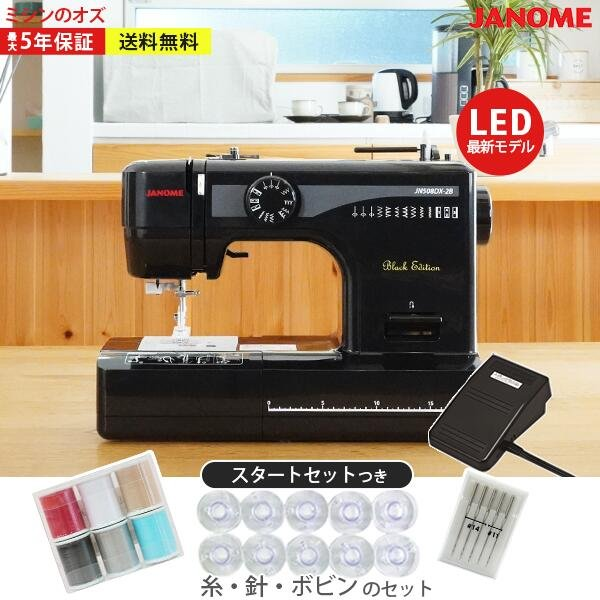
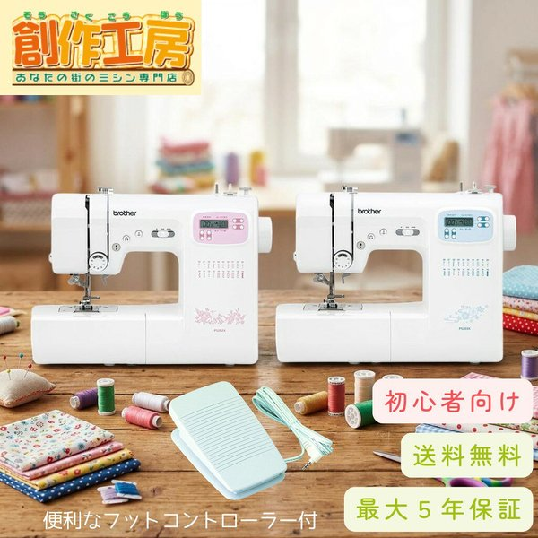
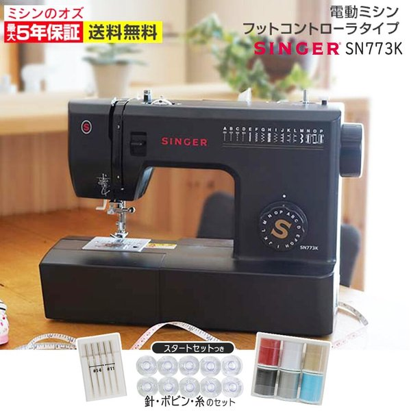
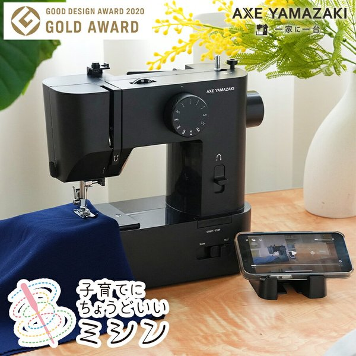
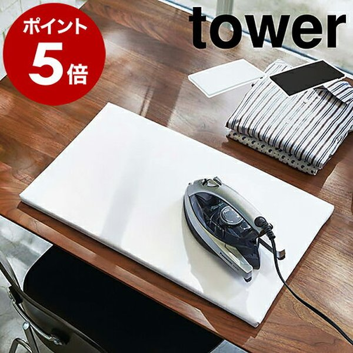
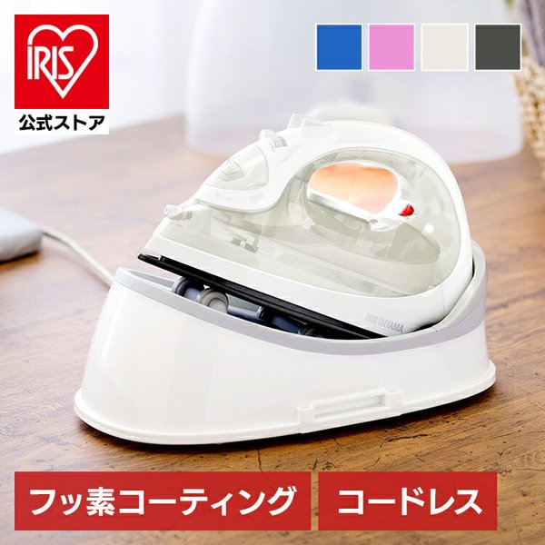
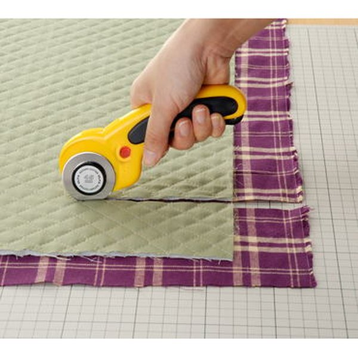
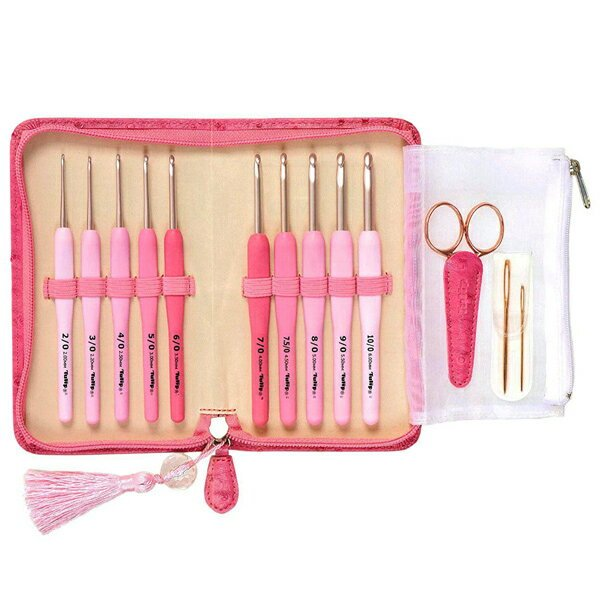
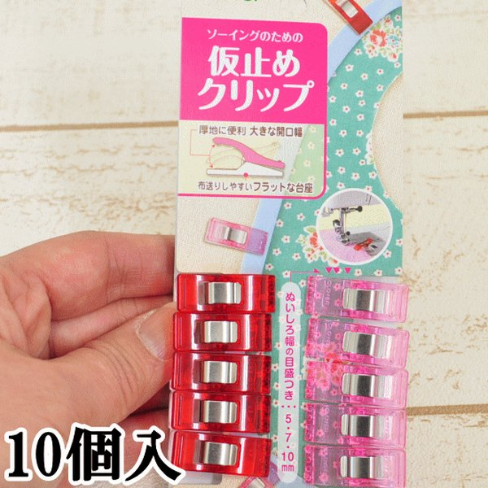
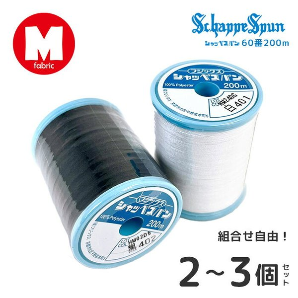

【2026年・ソーイング10選】ジャノメ JN508DX-2B・ブラザー PS203X・SINGER SN773K・アックスヤマザキ +plus・山崎実業 tower アイロン台・アイリスオーヤマ コードレスアイロン・オルファ ロータリーカッター・チューリップ ETIMO・クロバー 仮止めクリップ・フジックス シャッペスパンを実売価格で比較
冬は、部屋で布を触る時間が増える季節です。子どもの袋もの、マスクの予備、ちょっとした小物。作りたいものが決まっていると、ミシンと道具のどれを先に買うかも決めやすくなります。
選ぶ軸は3つです。「まず縫う量」。週に何度も縫うなら自動糸通しのあるコンピューター機、月に数回ならコンパクトな電動機で足ります。「次に道具の揃え方」。裁断用のロータリーカッターとマット、まち針の代わりのクリップがあると、作業の手順が短くなります。「最後に糸と針の予備」。縫い始めて糸が足りないと手が止まるので、基本色の糸を1巻ずつ用意しておきます。なお、レビュー件数が50件に満たない商品は記事内に実数を明記しています。
本記事では、楽天市場で人気・高評価のミシンと裁縫・手芸道具10選を、実売価格とレビュー評価つきで写真付き紹介します。
- おすすめ10選 スペック・特徴比較表
- BEST 1｜ジャノメ JN508DX-2B 電動ミシン（フットコントローラー付き）
- BEST 2｜ブラザー PS203X コンピューターミシン
- BEST 3｜シンガー SN773K 電動ミシン（ブラック）
- BEST 4｜アックスヤマザキ +plus（プラス）MM-21 電動ミシン
- BEST 5｜山崎実業 tower 平型アイロン台 60×36cm
- BEST 6｜アイリスオーヤマ コードレスアイロン SIR-04CL（ケース付き）
- BEST 7｜オルファ セーフティロータリーカッターL型 156B
- BEST 8｜チューリップ ETIMO Rose かぎ針セット
- BEST 9｜クロバー 仮止めクリップ 10個入（22-736）
- BEST 10｜フジックス シャッペスパン 60番 200m ミシン糸
- 【読者負担0円】買わなくても得する無料サービス
- まとめ：ミシン・裁縫・手芸10選の選び方
| 順位 | 商品名 | ブランド | 最大の特徴・おすすめ理由 | 総合評価 |
|---|---|---|---|---|
| BEST 1 | ジャノメ JN508DX-2B 電動ミシン（フットコントローラー付き） | ジャノメ（JANOME） | フットコントローラー付き | 4.54 |
| BEST 2 | ブラザー PS203X コンピューターミシン | ブラザー（brother） | 自動糸通しで準備が早い | 4.60 |
| BEST 3 | シンガー SN773K 電動ミシン（ブラック） | SINGER（シンガー） | 老舗ブランドで替え部品が手に入りやすい | 4.54 |
| BEST 4 | アックスヤマザキ +plus（プラス）MM-21 電動ミシン | アックスヤマザキ | 軽くて収納しやすい | 4.33 |
| BEST 5 | 山崎実業 tower 平型アイロン台 60×36cm | 山崎実業（tower） | たたんで隙間に収納できる | 4.70 |
| BEST 6 | アイリスオーヤマ コードレスアイロン SIR-04CL（ケース付き） | アイリスオーヤマ | コードレスで取り回しが楽 | 4.02 |
| BEST 7 | オルファ セーフティロータリーカッターL型 156B | オルファ（OLFA） | 刃の収納機構付き | 4.79 |
| BEST 8 | チューリップ ETIMO Rose かぎ針セット | チューリップ（Tulip） | 握りやすい持ち手 | 4.70 |
| BEST 9 | クロバー 仮止めクリップ 10個入（22-736） | クロバー（Clover） | 針穴が残らない | 4.86 |
| BEST 10 | フジックス シャッペスパン 60番 200m ミシン糸 | フジックス（FUJIX） | 普通地に使える定番糸 | 4.75 |
ジャノメ JN508DX-2B 電動ミシン（フットコントローラー付き）

ジャノメのJN508DX-2Bは、フットコントローラーが付いた電動ミシンです。足で速度を調整しながら両手で布を送れるので、カーブや角を縫うときに形を整えやすくなります。直線縫いとジグザグ、ボタンホールなど基本の縫い方がひと通りできます。楽天市場での実売価格は約24,800円（2026年11月時点）。
- フットコントローラー付き
- 基本の縫い方が揃う
- レビュー4,009件の定番
- 自動糸切りのような上位機種の機能はない
ブラザー PS203X コンピューターミシン

ブラザーのPS203Xは、自動糸通しを備えたコンピューターミシンです。針穴に糸を通す手間が減り、選んだ縫い目に合わせて糸調子も合わせてくれます。ミシンを触ったことがない人でも、縫い始めるまでの準備でつまずきにくいモデルです。楽天市場での実売価格は約26,950円（2026年11月時点）。
- 自動糸通しで準備が早い
- 糸調子を自動で合わせる
- レビュー1,211件の人気機
- コンピューター式なので、縫い目の種類は上位機種より少なめ
シンガー SN773K 電動ミシン（ブラック）

シンガーのSN773Kは、黒い本体に基本の縫い目をまとめた電動ミシンです。シンガーはミシンの老舗ブランドで、替え針やボビンが手に入りやすいのが強みです。直線縫いからジグザグまで、袋ものや小物づくりに必要な縫い方ができます。楽天市場での実売価格は約19,800円（2026年11月時点）。
- 老舗ブランドで替え部品が手に入りやすい
- 基本の縫い目が揃う
- レビュー4,931件の定番
- 本体に重さがあり、しまうときは両手で持つ必要がある
アックスヤマザキ +plus（プラス）MM-21 電動ミシン

アックスヤマザキの+plus MM-21は、軽くて持ち運べるコンパクトミシンです。使わないときは押し入れにしまえる大きさで、リビングのテーブルでも縫えます。小物や袋ものを作るのに向き、これからミシンを始める人の1台目に選ばれています。楽天市場での実売価格は約13,420円（2026年11月時点）。
- 軽くて収納しやすい
- 小物づくりに十分な機能
- レビュー6,003件の実売モデル
- 厚手の生地を何枚も重ねると縫いにくい
山崎実業 tower 平型アイロン台 60×36cm

山崎実業のtower 平型アイロン台は、60×36cmの平らな台です。使わないときは脚をたたんで、洗濯機の横や隙間に立てられます。白と黒の2色で、リビングに出したままでも生活感が出にくい見た目です。楽天市場での実売価格は約2,200円（2026年11月時点）。
- たたんで隙間に収納できる
- 60×36cmでシャツが掛けやすい
- レビュー1,060件の定番
- 高さを変える機能はない
アイリスオーヤマ コードレスアイロン SIR-04CL（ケース付き）

アイリスオーヤマのSIR-04CLは、コードのないコードレスアイロンです。裁縫台の上でもコードが引っかからず、接着芯を貼るときのプレスにも使えます。霧吹き機能とスチームショットを備え、ケース付きでしまえます。楽天市場での実売価格は約4,180円（2026年11月時点）。
- コードレスで取り回しが楽
- ケース付きで収納できる
- レビュー157件の実売モデル
- コード式より立ち上がりと連続使用の時間は短い
オルファ セーフティロータリーカッターL型 156B

オルファのセーフティロータリーカッターL型は、刃を収納できる機構が付いた円形カッターです。布の上を転がすように動かすと、まっすぐ裁断できます。使わないときは刃を引っ込めておけるので、引き出しにしまっても安全です。楽天市場での実売価格は約1,598円（2026年11月時点）。
- 刃の収納機構付き
- 布をまっすぐ裁断できる
- レビュー137件の実売モデル
- 刃を受けるカッターマットが別に必要
チューリップ ETIMO Rose かぎ針セット

チューリップのエティモロゼは、握りやすく滑りにくい持ち手のかぎ針セットです。号数ごとのかぎ針ととじ針、ケースが揃い、毛糸の作品を1つ作り切るのに足りる内容です。長時間編んでも手が疲れにくい形に作られています。楽天市場での実売価格は約12,980円（2026年11月時点）。
- 握りやすい持ち手
- 号数ごとに揃う
- レビュー93件の定番
- 1本ずつ買い足すより、最初の費用はかかる
クロバー 仮止めクリップ 10個入（22-736）

クロバーの仮止めクリップは、まち針の代わりに布を挟んで留める道具です。針穴が残らないので、合皮や防水布、ニットにも使えます。指で開いて挟むだけなので、まち針を刺すのが苦手な人にも扱いやすいです。楽天市場での実売価格は約509円（2026年11月時点）。
- 針穴が残らない
- 10個入りで足りる
- レビュー90件の定番
- 厚い布を何枚も重ねると挟みきれない
フジックス シャッペスパン 60番 200m ミシン糸

フジックスのシャッペスパン60番は、普通地のミシン縫いと手縫いに使えるポリエステル糸です。白・黒・生成などの基本色から選べ、1巻200mあるので小物を何点か縫っても足ります。家庭用ミシンの下糸にも使えます。楽天市場での実売価格は約880円（2026年11月時点）。
- 普通地に使える定番糸
- 200m巻きで長く使える
- レビュー65件の実売モデル
- 色は1巻ずつなので、作品に合わせて何色か揃える必要がある
この記事の商品を買う前に、まずは無料で得する選択肢をチェック。どれも登録・利用は0円で、無料期間中に解約すれば料金はかかりません。読みたい雑誌がある人、ポイントを貯めたい人、アンケートなら気軽という人、それぞれに合うものを選べます。
初回31日無料・無料期間中に解約すれば0円 → 楽天ポイントモール｜登録無料で毎日ポイ活
買い物なしでもポイントが貯まる無料サービス → 楽天インサイト｜アンケートに答えてポイント
登録無料・すきま時間のアンケートで貯まる → 楽天カード｜年会費永年無料
新規発行・年会費ずっと0円 →
4つのサービスの違いと使い分けは「出費0円で得する！買わずにポイントが貯まる無料サービス厳選4選」でまとめています。
💡 まとめ：ミシン・裁縫・手芸10選の選び方
ミシンは、縫う量と置き場所で選ぶと失敗が少なくなります。週に何度も縫うなら、ジャノメ JN508DX-2B、ブラザー PS203X、シンガー SN773K。収納を優先するなら、軽いアックスヤマザキの+plus MM-21です。縫う前後の手間は、山崎実業 towerのアイロン台とアイリスオーヤマのコードレスアイロンで減らせます。裁断はオルファのロータリーカッター、編み物はチューリップ ETIMOのかぎ針セット、布の固定はクロバーの仮止めクリップ、糸はフジックスのシャッペスパン。ミシン1台と、裁断・固定・糸の3つを先に揃えると、最初の作品までが短くなります。
楽天市場では「5と0のつく日」や「お買い物マラソン」などのキャンペーンに合わせて購入すると、ポイント還元が最大化してお得に手に入ります。ぜひチェックしてみてくださいね。